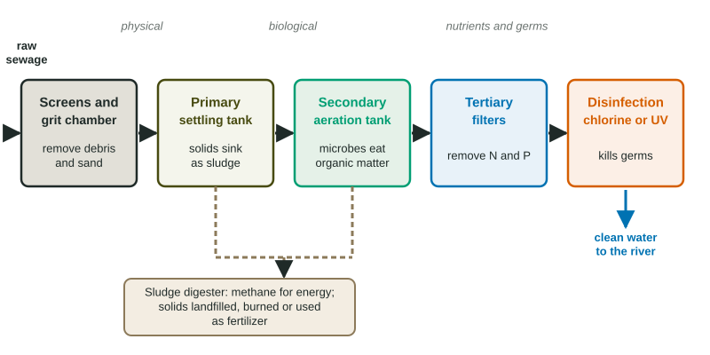

Everything that goes down a drain or toilet in a city flows through sewer pipes to a wastewater treatment plant. Untreated sewage would bring three problems to a river: organic matter that uses up oxygen as it decays, nutrients that feed algal blooms, and germs that make people sick. Each stage of treatment targets one of these.
The stages

| Stage | Type | What it does | What it removes |
|---|---|---|---|
| Primary | physical | screens, grit chambers, settling tanks | large objects, sand, settleable solids (as sludge), grease |
| Secondary | biological | aerated tanks where microbes eat dissolved organic matter; more settling | most dissolved organic matter (BOD) |
| Tertiary | chemical and physical | filters, chemicals, special microbes | nitrogen, phosphorus, some other chemicals |
| Disinfection | chemical or physical | chlorine, ozone or UV light | disease-causing bacteria and viruses |
BOD, biochemical oxygen demand, measures how much oxygen microbes would use to break down the organic matter in a water sample. High-BOD sewage in a river would pull dissolved oxygen down for kilometers downstream. Secondary treatment lets microbes use that oxygen inside the plant, where tanks are kept aerated, instead of in the river.
Worked example: percent removed. Raw sewage has a BOD of 220 mg/L. After secondary treatment it is 20 mg/L. What percent was removed?
Removed: mg/L. Setup: . Answer: .
Sludge
The solids collected in primary and secondary treatment are sludge. It is usually digested by microbes without oxygen, which produces methane that the plant can burn for heat or electricity. The remaining solids are dried, then landfilled, incinerated, or, if they are low enough in metals and other contaminants, spread on fields as fertilizer.
Septic systems
Homes too far from a sewer line use a septic system. Wastewater flows into a buried tank where solids settle and bacteria break some of them down. The liquid flows out into a drain field of perforated pipes in gravel, and the soil filters it while microbes break down what remains. A septic system that is poorly sited or never pumped can leak nutrients and germs into groundwater and nearby lakes.
Reading treatment data
A table of measurements through a plant lets you see what each stage does. Suspended solids drop most in primary treatment; BOD drops most in secondary treatment; phosphorus drops only in tertiary treatment; bacteria counts drop most with disinfection. A graph of dissolved oxygen below an outfall often shows an oxygen sag: oxygen falls for some kilometers downstream as river microbes break down the waste, then recovers. Better treatment makes the sag smaller.
When systems fail
Many older cities have combined sewers that carry both stormwater and sewage in the same pipe. In heavy rain the plant cannot handle the flow, and the overflow, raw sewage included, goes straight into rivers. Separating storm and sanitary sewers, adding storage tunnels that hold the overflow until the plant can treat it, and green infrastructure such as rain gardens that soak up rain all reduce these overflows.